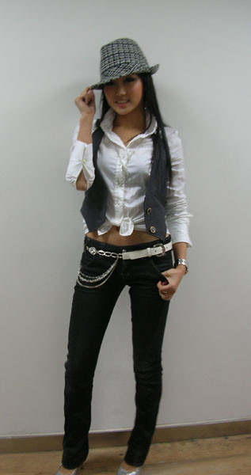
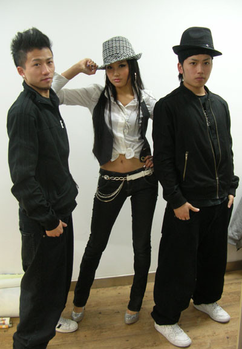
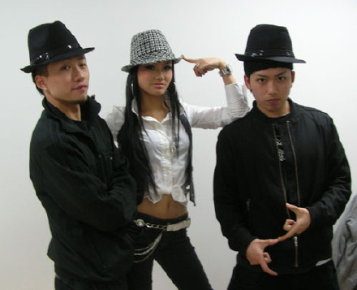

在同济的校园开唱,已经不是第一次拉票咯,去年的时候就有参加，但是去年还没有发片.今年已经很顺利的发行自己的唱片,我希望到时候能来东方风云榜上取得好成绩,我对自己的实力还是很有信心的,不过关键还是要靠大家多多支持我拉,还有就是看我是否幸运拉!哈
那天我老开心的,终于见到了我的铃铛们,才知道小虾米居然是男生,听说可儿唱歌很棒,尤其是唱我的歌,哈哈,真的好想快点切磋一下哦,还有小潴啊,五月都是男生,只有可儿一个是女生哦,而且她说她是做了两小时车赶来为我加油的,所以我特别感动,那天见到的铃铛年龄都和我差不多吧,他们都叫我"豆豆",好亲切哦,真的好久没有听见有人这样叫我拉,在这里真的要感谢那天来为我加油的铃铛们,还有感谢想来为我加油但来不了的铃铛们,谢谢大家!
我的新造型,很COOL吧,大家看我的小背心上面只有两粒纽扣.其实本来有四粒的,但是就在上台的前15分钟掉了一粒,我找啊找,所有的人帮我一起找遍整个化妆间怎么也找不到,所以当时最快的解决办法就是再拆掉一粒,使剩下的两粒对称.

我的舞蹈老师
SIM,我,小安

我自己满喜欢这个造型的,以后会再发展一下!哈
